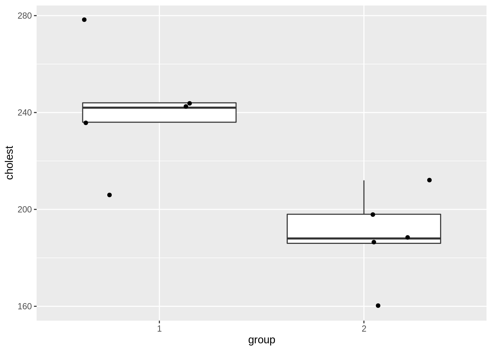
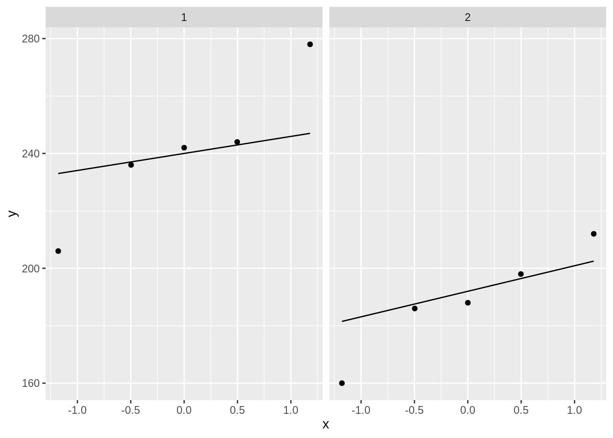

Introduction
Inference was only correct if distributional assumptions were satisfied
e.g Normal distribution
equal variance
The \(p\)-value: \(\text{P}_0\left[ \vert T\vert \geq \vert t \vert \right]\).
- Calculated using the null distribution of \(T\) that we derived under the assumptions
- In correct if assumptions are violated
\(95\%\) CI also builds upon these assumptions. If they are invalid then the intervals will not contain the population parameter with 95% probability.
Asymptotic theory is more difficult to place: the \(t\)-test is asymptotically non-parametric because for very large samples the distributional assumptions of normality are no longer important.
If assumptions hold the parametric approach
- more efficient: larger power with same sample size + smaller CI.
- more flexible: easier to analyse data with complex designs
Cholesterol example
- Cholesterol concentration in blood measured for
- 5 patients (group=1) two days upon a stroke
- 5 healthy subject (groep=2).
- Is cholesterol concentration of hart patients and healthy subjects on average different?
chol <- read_tsv("https://raw.githubusercontent.com/GTPB/PSLS20/master/data/chol.txt")
chol$group <- as.factor(chol$group)
nGroups <- table(chol$group)
n <- sum(nGroups)
chol

- Possibly outliers
- Difficult to assess distributional assumptions when only 5 observations are available.
Permutation tests
If the data are not normally distributed or if we do not want to make distributional assumptions we can resort to a permutation test.
\[
H_0: f_1(x)=f_2(x)
\]
Problem if we can reject the null hypothesis that their is an effect of the treatment, how can we interpret how the difference between both distributions?
In order enable an useful interpretation if we use an permutation t-test, we have to make additional assumptions:
location shift model: we assume that the distributions have the same shape but that the treatment can only induce a shift in the location of the distribution:
\[
H_0: f_1(x)=f_2(x) \text{ vs } H_1: \{\forall y: f_1(y)=f_2(y-\Delta)\}
\] with \[
\Delta = \mu_1 - \mu_2
\]
Under this assumption we can again interpret a rejection of \(H_0\) in terms of a difference in means.
However, we would have to assess this assumption.
Instead we will resort to rank tests, which will allow to further relax this assumption!
Rank Tests
- Important group of non-parametric test
- Non-parametric,
- Exact \(p\)-values using a permutation null distribution.
- No need for separate permutation distribution for each new dataset.
- Permutation null distribution of rank tests only depends on sample size
- Robust to outliers
Ranks
Rank tests start from rank-transformed data.
- Let \(Y_1, \ldots, Y_n\).
- In the absence of ties \[R_i=R(Y_i) = \#\{Y_j: Y_j\leq Y_i; j=1,\ldots, n\}\]
- Smallest observation has rank 1, second smallest rank 2, … , largest observation gets rank \(n\)
[1] 244 206 242 278 236 188 212 186 198 160
chol %>%
pull(cholest) %>%
rank
[1] 9 5 8 10 7 3 6 2 4 1
Ties
Sometimes ties occur: two observations with identical values
withTies <- c(403, 507, 507, 610, 651, 651, 651, 830, 900)
rank(withTies)
[1] 1.0 2.5 2.5 4.0 6.0 6.0 6.0 8.0 9.0
Ties: 507 occurs twice, 651 occurs 3 times
If ties occur midranks are used.
midrank of observation \(Y_i\) becomes \[\begin{eqnarray*}
R_i &=& \frac{ \#\{Y_j: Y_j\leq Y_i\} + ( \#\{Y_j: Y_j < Y_i\} +1)}{2}.
\end{eqnarray*}\]
Ranks of pooled sample
- Let \(Y_{ij}\), \(i=1,\ldots, n_j\) be observations from two treatment groups \(j=1,2\).
- They can also be represented by \(Z_1,\ldots, Z_n\) (\(n=n_1+n_2\)), the outcomes of the pooled sample
chol %>% mutate(ranks = rank(cholest))
Wilcoxon-Mann-Whitney Test
Simultaneously developed by Wilcoxon, and, Mann and Whitney: Wilcoxon-Mann-Whitney, Wilcoxon rank sum test or Mann-Whitney U test
Hypotheses
Under \(H_0\) the distributions of the two groups are equal \[H_0: f_1=f_2\]
Under the alternative \(H_1\) the distributions differ in location \[H_1: \mu_1\neq \mu_2\]
\(H_1\) assumes location-shift, we will relax this assumption later on.
Test statistic
Classic T-test: assesses the difference in sample means \(\bar{Y}_1-\bar{Y}_2\).
Here: Difference in sample means based on rank transformed data
Ranks based on the pooled sample (upon joining the observations from the two groups): \(R_{ij}=R(Y_{ij})\) is de rank of observation \(Y_{ij}\) in the pooled sample.
\[
T = \frac{1}{n_1}\sum_{i=1}^{n_1} R(Y_{i1}) - \frac{1}{n_2}\sum_{i=1}^{n_2} R(Y_{i2}) .
\]
Under \(H_0\) we expect the average rank of the first group to be close to that of the second group so \(T\) is close to zero.
Under \(H_1\) we expect the mean ranks to differ so that \(T\) deviates from zero.
It is sufficient to only calculate \[S_1=\sum_{i=1}^{n_1} R(Y_{i1})\].
\(S_1\) is the sum of the ranks of the first group: rank sum test.
This holds because \[
S_1+S_2 = \text{sum of all ranks} = 1+2+\cdots + n=\frac{1}{2}n(n+1).
\]
\(S_1\) (or \(S_2\)) is a good test statistic
Use permutations to determine the exact permutation distribution. (Permute the ranks between the groups)
For a given \(n\) and no ties the rank transformed data is always \[1, 2, \ldots, n\]
For given \(n_1\) en \(n_2\) the permutation distribution is always the same!
With current computing power this is not so important any more.
Standardized statistic
Often the standardized test statistic is used \[
T = \frac{S_1-\text{E}_{0}\left[S_1\right]}{\sqrt{\text{Var}_{0}\left[S_1\right]}},
\]
with \(\text{E}_{0}\left[S_1\right]\) and \(\text{Var}_{0}\left[S_1\right]\) the expect mean and variance of S1 under \(H_0\).
Under \(H_0\) \[
\text{E}_{0}\left[S_1\right]= \frac{1}{2}n_1(n+1) \;\;\;\;\text{ en }\;\;\;\; \text{Var}_{0}\left[S_1\right]=\frac{1}{12}n_1n_2(n+1).
\]
Under \(H_0\) and when \(\min(n_1,n_2)\rightarrow \infty\) \[
T = \frac{S_1-\text{E}_{0}\left[S_1\right]}{\sqrt{\text{Var}_{0}\left[S_1\right]}} \rightarrow N(0,1).
\]
Asymptotically the standardised statistic follows a standard normal distribution!
Cholesterol example
We illustrate the result for the cholesterol example using the R function wilcox.test.
wilcox.test(cholest ~ group, data = chol)
Wilcoxon rank sum exact test
data: cholest by group
W = 24, p-value = 0.01587
alternative hypothesis: true location shift is not equal to 0
S1 <- chol %>%
mutate(ranks = rank(cholest)) %>%
filter(group == 1) %>%
pull(ranks) %>%
sum
S1
[1] 39
S2 <- chol %>%
mutate(ranks = rank(cholest)) %>%
filter(group == 2) %>%
pull(ranks) %>%
sum
S2
[1] 16
- Where does \(W=\) 24 comes from?
Mann and Whitney test
Mann and Whitney test in absence of ties: \[
U_1 = \sum_{i=1}^{n_1}\sum_{k=1}^{n_2} \text{I}\left\{Y_{i1}\geq Y_{k2}\right\}.
\]
with \(\text{I}\left\{.\right\}\) an indicator that equals 1 if the expression is true and is zero otherwise.
U counts how many times an observation of the first group is larger or equal to an observation from the second group.
y1 <- chol %>%
filter(group == 1) %>%
pull(cholest)
y2 <- chol %>%
filter(group == 2) %>%
pull(cholest)
u1Hlp <- sapply(y1, function(y1i, y2) {
y1i >= y2
}, y2 = y2)
colnames(u1Hlp) <- y1
rownames(u1Hlp) <- y2
244 206 242 278 236
188 TRUE TRUE TRUE TRUE TRUE
212 TRUE FALSE TRUE TRUE TRUE
186 TRUE TRUE TRUE TRUE TRUE
198 TRUE TRUE TRUE TRUE TRUE
160 TRUE TRUE TRUE TRUE TRUE
[1] 24
It can be shown that \(U_1 = S_1 - \frac{1}{2}n_1(n_1+1).\)
S1 - nGroups[1] * (nGroups[1] + 1) / 2
1
24
- \(U_1\) en \(S_1\) contain the same information
- \(U_1\) is also a rank statistic, and
- Exact test based on \(U_1\) and \(S_1\) are equivalent.
Probabilistic index
- \(U_1\) has a better interpretation feature
- Let \(Y_j\) a random observation from group \(j\) (\(j=1,2\)). Then \[\begin{eqnarray*}
\frac{1}{n_1n_2}\text{E}\left[U_1\right]
&=& \text{P}\left[Y_1 \geq Y_2\right].
\end{eqnarray*}\]
So we can estimate the probability by calculating the mean of all indicator variable values \(\text{I}\left\{Y_{i1}\geq Y_{k2}\right\}\). Note, that we did \(n_1 \times n_2\) comparisons
[1] 0.96
U1 / (nGroups[1] * nGroups[2])
1
0.96
Probability \(\text{P}\left[Y_1 \geq Y_2\right]\) is referred to as the probabilistic index.
It is the probability that a random observation of the first group is larger or equal than a random observation of the second group
If \(H_0\) holds \(\text{P}\left[Y_1 \geq Y_2\right]=\frac{1}{2}\).
R function wilcox.test does not return the Wilcoxon rank sum statistic. It returns the Mann-Whitney statistic \(U_1\).
Lets revisit the result
wTest <- wilcox.test(cholest ~ group, data = chol)
wTest
Wilcoxon rank sum exact test
data: cholest by group
W = 24, p-value = 0.01587
alternative hypothesis: true location shift is not equal to 0
[1] 24
probInd <- wTest$statistic / prod(nGroups)
probInd
W
0.96
Because \(p=\) 0.0159 \(<0.05\) we conclude at the \(5\%\) significance level that the mean cholesterol level of hart patients is larger then that of healthy subjects.
- Note that we have assumed that the location-shift model is valid in this conclusion.
- We also know that higher cholesterol level are more likely for hart patients then for healthy subjects and this probability is \(U1/(n_1\times n_2)=\) 96%.
- We should assess the location shift assumption. But this is not possible with only 5 observations.
Without the location-shift assumption the conclusion in terms of the probabilistic index remains valid!
- So when we do not assume location shift we test for
\[H_0: F_1=F_2 \text{ vs } H_1: P[Y_1 \geq Y_2] \neq 0.5.\]
Conclusion
There is a significant difference in the distribution of the cholesterol concentration of hart patients two days upon a stroke and that of healthy subject (\(p=\) 0.0159). It is more likely to observe higher cholesterol levels for hart patients then for healthy subjects. The point estimator for this probability is 96%.
Kruskal-Wallis Rank Test
The Kruskal-Wallis Rank Test (KW-test) is a non-parameteric alternative for ANOVA F-test.
Classical \(F\)-teststatistic can be written as \[
F = \frac{\text{SST}/(g-1)}{\text{SSE}/(n-g)} = \frac{\text{SST}/(g-1)}{(\text{SSTot}-\text{SST})/(n-g)} ,
\]
with \(g\) the number of groups.
SSTot depends only on outcomes \(\mathbf{y}\) and will not vary in permutation test.
SST can be used as statistic \[\text{SST}=\sum_{j=1}^t n_j(\bar{Y}_j-\bar{Y})^2\]
The KW test statistic is based on SST on rank-transformed outcomes, \[
\text{SST} = \sum_{j=1}^g n_j \left(\bar{R}_j - \bar{R}\right)^2 = \sum_{j=1}^t n_j \left(\bar{R}_j - \frac{n+1}{2}\right)^2 ,
\]
with \(\bar{R}_j\) the mean of the ranks in group \(j\), and \(\bar{R}\) the mean of all ranks, \[
\bar{R} = \frac{1}{n}(1+2+\cdots + n) = \frac{1}{n}\frac{1}{2}n(n+1) = \frac{n+1}{2}.
\]
The KW teststatistic is given by \[
KW = \frac{12}{n(n+1)} \sum_{j=1}^g n_j \left(\bar{R}_j - \frac{n+1}{2}\right)^2.
\]
The factor \(\frac{12}{n(n+1)}\) is used so that \(KW\) has a simple asymptotic null distribution. In particular under \(H_0\), given thart \(\min(n_1,\ldots, n_g)\rightarrow \infty\), \[
KW \rightarrow \chi^2_{t-1}.
\]
The exact KW-test can be executed by calculating the permutation null distribution (that only depends on \(n_1, \ldots, n_g\)) to test \[H_0: f_1=\ldots=f_g \text{ vs } H_1: \text{ at least two means are different}.\]
In order to allow \(H_1\) to be formulated in terms of means, the assumption of locations shift should be valid.
For DMH example this is not the case.
If location-shift is invalid, we have to formulate \(H_1\) in terms of probabilistic indices: \[H_0: f_1=\ldots=f_g \text{ vs } H_1: \exists\ j,k \in \{1,\ldots,g\} : \text{P}\left[Y_j\geq Y_k\right]\neq 0.5\]
DNA Damage Example
kruskal.test(length ~ dose, data = dna)
Kruskal-Wallis rank sum test
data: length by dose
Kruskal-Wallis chi-squared = 14, df = 3, p-value = 0.002905
On the \(5\%\) level of significance we can reject the null hypothesis.
R-functie kruskal.test only returns the asymptotic approximation for \(p\)-values.
With only 6 observaties per groep, this is not a good approximation of the \(p\)-value
With the coin R package we can calculate the exacte \(p\)-value
library(coin)
kwPerm <- kruskal_test(length ~ dose,
data = dna,
distribution = approximate(B = 100000)
)
kwPerm
Approximative Kruskal-Wallis Test
data: length by dose (0, 1.25, 2.5, 5)
chi-squared = 14, p-value = 0.00041
pairwise.wilcox.test(dna$length, dna$dose)
Pairwise comparisons using Wilcoxon rank sum exact test
data: dna$length and dna$dose
0 1.25 2.5
1.25 0.013 - -
2.5 0.013 0.818 -
5 0.013 0.721 0.788
P value adjustment method: holm
- All DMH behandelingen are significantly different from the control.
- The DMH are not significantly different from one another.
- U1 does not occur in the
pairwise.wilcox.test output. Point estimate on probability on higher DNA-damage?
nGroup <- table(dna$dose)
probInd <- combn(levels(dna$dose), 2, function(x) {
test <- wilcox.test(length ~ dose, subset(dna, dose %in% x))
return(test$statistic / prod(nGroup[x]))
})
names(probInd) <- combn(levels(dna$dose), 2, paste, collapse = "vs")
probInd
0vs1.25 0vs2.5 0vs5 1.25vs2.5 1.25vs5 2.5vs5
0.0000000 0.0000000 0.0000000 0.4444444 0.2777778 0.3333333
Because there are doubts on the location-shift model we draw our conclusions in terms of the probabilistic index.
Conclusion
- There is an extremely significant difference in in the distribution of the DNA-damage measurements due to the treatment with DMH (\(p<0.001\) KW-test).
- DNA-damage is more likely upon DMH treatment than in the control treatment (all p=0.013, WMW-testen).
- The probability on higher DNA-damage upon exposure to DMH is 100% (Calculation of a CI on the probabilistic index is beyond the scope of the course)
- There are no significant differences in the distributions of the comit-lengths among the treatment with the different DMH concentrations (\(p=\) 0.72-0.82).
- DMH shows already genotoxic effects at low dose.
- (All pairwise tests are corrected for multiple testing using Holm’s method).
